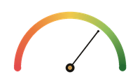

FEAR & GREED 71 Greed BIGGEST MOVER TODAY TRX +1.0%Regulators Thin Out, Robinhood Goes All In
Bitcoin is chopping around $83-84K while Washington's crypto cops dwindle to a skeleton crew and everyone else races to bolt AI agents onto their trading apps.
Senate Report Says Tether Is Iran's Sanctions-Evasion Superhighway

Senator Blumenthal's subcommittee released a report Monday calling USDT a 'superhighway' for Iranian sanctions evasion, referring its findings to Treasury and the Justice Department.
This isn't the first time Tether has been in this particular headline, and it won't be the last — the company keeps growing regardless. But a formal DOJ/Treasury referral is a different animal than a critical op-ed, and it's a reminder that stablecoins carry geopolitical baggage that a lot of holders would probably rather not think about.
Read more at Decrypt →SEC and CFTC Down to Three Commissioners Total After Latest Resignation

Seven commissioner seats across the SEC and CFTC will be vacant after Friday following a key resignation, leaving crypto's two primary federal regulators running on a skeleton crew of three total.
Whatever you think of the current regulatory approach, having this few decision-makers in the room for an industry this size is a strange way to run things. Expect a lot of rulemaking to either freeze or get pushed through with minimal debate — neither is obviously the 'clarity' the industry keeps asking for.
Read more at Cointelegraph →Robinhood Hands Out AI Trading Agents and Perps, You Keep the Risk

Robinhood is rolling out an AI agent that trades users' money around the clock, alongside perpetual futures and weekend stock trading, plus a new 'Robinhood Agents' feature letting people build their own bots inside the app.
Automating trading decisions and layering on leveraged perps is a combination that sounds great in a product demo and considerably less great at 3am during a volatility spike. The risk disclosures will presumably get longer; whether anyone reads them is another question entirely.
Read more at CoinDesk →Kalshi Kills Liquidity Incentives Amid Wash Trading Allegations — Right Before a $40B Raise

Kalshi is ending its liquidity incentive program amid allegations of wash trading, even as its monthly volume hit an all-time high of nearly $53 billion in September. The timing lands right as the prediction market platform is reportedly in advanced talks to raise new funding at a $40 billion valuation.
Nothing says 'we take the allegations seriously' quite like killing the incentive program the same week you're shopping a valuation that's roughly double what it was four months ago. Prediction markets are having a moment, but volume numbers built on incentivized trading are exactly the kind of thing worth squinting at.
Read more at The Block →Coinbase Completes Its Derivatives Stack With CFTC Approval

Coinbase received DCO approval from the CFTC, rounding out its ability to list, broker, and clear fully collateralized derivatives products entirely in-house.
This is the kind of story that doesn't move price but quietly matters more than most of the ones that do — it's Coinbase becoming a vertically integrated derivatives exchange under a U.S. regulator's blessing, which is a meaningfully different business than the spot exchange it started as.
Read more at The Block →First US Spot NEAR ETF Launches With Staking Rewards Baked In

Bitwise's NRR began trading on NYSE Arca, giving brokerage accounts exposure to NEAR plus staking rewards, arriving as the AI-focused token has nearly tripled since August.
The ETF wrapper keeps expanding beyond bitcoin and ether into increasingly narrow, story-driven tokens — staking yield passed through a NAV is a neat trick, but it's also a reminder that 'ETF' doesn't mean 'safe,' just 'easier to access.'
Read more at Decrypt →Bitget Hack Traced Back to a Zero-Day Exploit From Late August

SlowMist says it identified malicious activity tied to the Bitget hack weeks before it became public, tracing the intrusion to a zero-day exploit from August 31.
The gap between 'compromise happens' and 'compromise gets noticed' remains crypto's most consistent vulnerability. Exchanges keep getting better at post-mortems and worse, apparently, at catching things in real time.
Read more at Cointelegraph →Bitcoin's Rally Cools Even as a 'Bull Score' Gauge Nears Perfect

Bitcoin is showing signs of cooling even as a closely watched 'bull score' gauge approaches its highest possible reading, a divergence that's got analysts scratching their heads about what comes next.
Indicators flashing max-bullish right as price stalls is exactly the kind of setup that makes chart-watching both fun and useless in equal measure. Read the gauges if you like, just don't mistake them for a crystal ball.
Read more at CoinDesk →